Ви думаєте що світ тварин простіший, ніж світ людей? Цікаві факти представлені в цьому розділі зруйнують цей стереотип!
- У дельфінів є імена. Причому кожне дельфінча отримує своє ім’я при народженні. Цей факт довели вчені, записавши свист-сигнал, що означає ім’я, на яке відгукувався один і той самий дельфін.
- Рекорд зі стрибків належить кенгуру, найбільшому ссавцю Австралії. При наближенні небезпеки, кенгуру вдається до втечі стрибками, спираючись на хвіст як на жердину, і може стрибнути в довжину на 10–12 метрів, пролітаючи над гладдю степу на висоті близько двох метрів.
- Довгий час вважалося, що всі хребетні харчуються виключно через рот і травну систему. Нещодавно було виявлено, що тихоокеанський п’явкорот — найпростіший хребетний, що має хордоподібний орган під назвою нотохорд — може поглинати поживні речовини прямо через шкіру.
- У мухи Goniurellia tridens, яку виявили ОАЕ, на крилах зображені… ще дві мухи. У такий спосіб муха захищається від хижаків, прикидаючись «Мушиною зграєю».
- Африканська яєчна змія унікальна тим, що може харчуватися виключно яйцями птахів, діаметр яких, може значно перевершувати розміри самої змії. Вдається їй це завдяки дуже рухливим з’єднанням кісток черепа, малорозвиненим зубам і особливим відросткам шийних хребців. Саме завдяки їм змія розкриває шкаралупу, ковтаючи рідину і випльовує потім залишки шкаралупи.
- З усіх тварин тільки кролики та папуги можуть дивитися назад, не повертаючи голови.
- Дорослі свійські кішки не нявкають, спілкуючись між собою. Звук «мяу» характерний для кошенят, підкликати свою маму, а дорослі кішки навчилися використовувати цей звук щоби привернути увагу людини. Для дорослих диких кішок нявкання взагалі не характерне в жодних ситуаціях.
- Висушені яйця (ікра) морської креветки можуть зберігатися роками, але щойно потрапляють у воду, «вилуплюються» через кілька годин.
- Домашні кішки — це єдиний різновид котячих, здатний тримати хвіст вертикально при ходьбі. Усі дикі кішки тримають свої хвости горизонтально або між ногами.
- Найбільше яйце, як відомо, у страуса. А найменше — у ківі. Страусине яйце має найменший відсоток ваги в порівнянні з його тілом, а от у ківі — якраз, навпаки. Деякі яйця ківі можуть важити до чверті ваги самого птаха.
- Печінка полярного ведмедя містить так багато вітаміну А, що якщо людина її з’їсть, це може мати фатальні наслідки.
- Незважаючи на маленькі габарити, мухи літають, як надшвидкісні літаки: швидкість польоту гедзя — 22,4 км/год, кімнатної мухи — 6,4 км/год, падальні мухи — 11 км/год. Вчені довели, що муха так вправно ухиляється від мухобійки лише тому, що вона не тільки швидко метикує, але і здатна планувати свої дії.
- У комарів є зуби. Під мікроскопом у них у роті видно 22 зуби.
- У японській кухні є страва «восьминіг-танцюрист». Нещодавно вбитого восьминога поміщають у чашку з рисом, а потім поливають соєвим соусом — і в цей час молюск починає «танцювати», перебираючи своїми щупальцями. Цей ефект пояснюється особливою будовою нервових волокон восьминогів, які навіть після смерті реагують на натрій який міститься в соусі і змушує м’язи скорочуватися.
- В околицях французького села План-де-ла-Тур, якось раз небувало розмножилися зелені коники. Місцеві кури з задоволенням їх клювали, а згодом жителі села були приголомшені: кури почали нести яйця з зеленими жовтками.
- Згідно з документами, найменшим конем був жеребець Літтл Пампкін, з ферми міні-коней «Делла Терра», США. На 30 листопада 1975 його зріст становив 35,5 см, а вага — 9 кг.
- Фламінго живуть дивно довге життя: до 80 років.
- У Ліхтенштейні фермери публікують некрологи на честь своїх померлих корів.
- Миша — найпоширеніший ссавець на Землі.
- Більше шансів, що на вас нападе корова, ніж що це зробить акула.
- Щур, може впасти з п’ятиповерхової будівлі без жодних ушкоджень.
- Жирафи не мають голосових зв’язок.
- На холоді комахи тремтять, як і людина.
- Новонароджений кенгуру може поміститися в чайній ложці.
- Метелики не можуть літати під час землетрусу.
- Послід вомбата має кубічну форму.
- Людина важить, у середньому, у 20–30 разів більше за кішку. І якщо в кішку кинути тапком, це рівносильно, що в людину кинути кріслом.
- Колібрі — єдиний птах, що здатний летіти назад.
- Відбиток носа кожної собаки унікальний.
- Черепах можна відрізнити по голосу. Самці хрюкають, а самиці шиплять.
- Устриці міняють стать залежно від того, яка стать зараз краще підходить для спарювання.
- Якби бобер НЕ гриз дерева й не сточував цим зуби, то його зуби могли б проткнути його ж мозок.
- Метелики відчувають смак лапками.
- У бобрів прозорі повіки!
- Пінгвін може вистрибувати з води на три метри у висоту.
- Серце їжака б’ється 300 разів на хвилину.
- Корова за день, виробляє газів у двісті разів більше, ніж людина.
- Язик хамелеона довший за його тіло.
- Австралійські гігантські дощові черв’яки досягають чотирьох метрів у довжину.
- Потрібно всього 14 секунд, щоб обскубти курку в спеціальному автоматі.
- Півень не може співати, якщо не витягне шию.
- Деякі жаби здатні вижити після повного замороження.
- Дощові черв’яки мають п’ять сердець.
- Собаки можуть гавкати з акцентом.
- Слон може стояти на голові.
- Верблюди мають три повіки, щоби захистити очі від піщаних бурь.
- Серце в креветок розташоване в голові.
- Коала спить 18–22 години на добу.
- Максимальна швидкість дельфіна 60 км/год.
- Від бджолиних укусів помирає більше людей ніж від зміїних.
- На кожну людину припадає 200 млн комах.
- У світі більше курей ніж людей.
- Шлунок змії може переварювати кістки й зуби, а волосся чи шерсть ні.
- Скорпіони світяться під ультра фіолетовим світлом.
- Фламінго можуть згинати свої коліна назад і вперед.
- Сова не може рухати своїми очима в сторони.
- Колібрі не вміють ходити.
- Кусає тільки самиця комара.
- Коти не люблять запах цитрусових.
- Периферійний зір кота 285 градусів.
- Котяча сеча світиться в темряві.
- У корови не має верхніх передніх зубів.
- Волосок північного оленя в середині порожній, наче труба.
- Кажани вилітаючи з печери завжди повертають ліворуч.
- Крокодил не може рухати своїм язиком.
- Стрикоза має 6 ніг, але не вміє ходити.
- Змія не може вкусити під водою, інакше вона захлинеться.
- Слон єдиний ссавець який не може стрибати.
Поширені міфи про тварин
Тварини підживлюють нашу уяву як ніщо інше. Ми любимо слухати цікаві факти про них та передавати їх далі, і це стало набагато легше робити з появою Інтернету. Проблема в тому, що деякі з цих, так званих, фактів, насправді такими не є - вони являють собою міфи, омани та непорозуміня. як би ви їх не назвали. А через те, що тварини не дуже квапляться виправити наше про них уявлення, нам самим варто вивчити це питання і відокремити факти від вигадок.
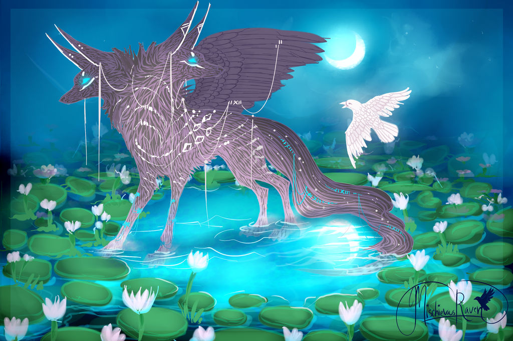-
Бджоли вмирають після того, як жалять нас.
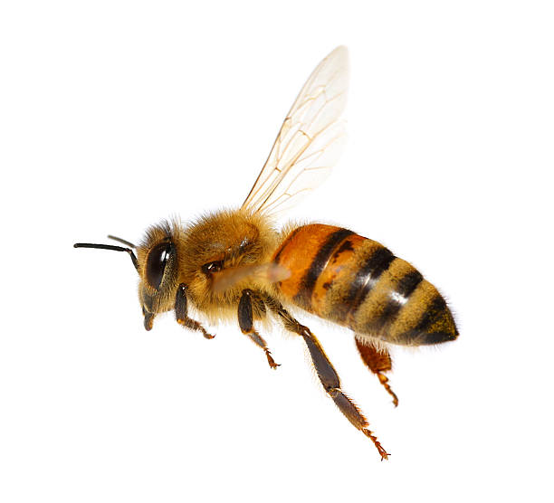Бджоли - хороші, оси - погані. Так думає більшість з нас. Ми переконуємо себе в тому, що оси злі і жахливі комахи, і ніщо не доставляє їм більшого задоволення, ніж руйнування гармонії наших пікніків на природі і можливість вжалити нас, коли їм заманеться. З іншого боку, ми вважаємо бджіл доброзичливими, працьовитими членами суспільства, які роблять мед для нашого задоволення і кусають нас лише тоді, коли ми самі їх дратуємо, бо вони ж помирають коли кусають нас. Чи не так?
Насправді все залежить від того, яка бджола вирішить вас вкусити. Якщо ідеться про звичайну, середньостатистичну медоносну бджолу,тоді вона (швидше за все) помре, якщо ви роздражните її настільки, що їй доведеться вас вкусити. Це відбувається, тому що у них єшипи на жалах, які впиваються в шкіру тварини, тому намагаючись звільнитися, бджола відриває не тільки жало, але також мішечок зотрутою, і частину своєї травної системи, м'язів і нервів. По суті, бджола розриває сама себе. Більшість інших бджіл, включаючишершнів, можуть з легкістю жалити по багато разів, оскільки їх гладкі жала не залишаються в шкірі тварин.
Варто відзначити, що навіть у випадку з медоносними бджолами, в цьому правилі є винятки. Матка медоносних бджіл також володієгладким жалом, тому вона може використовувати його стільки разів, скільки їй захочеться. -
Доллі була не першою клонованою твариною.
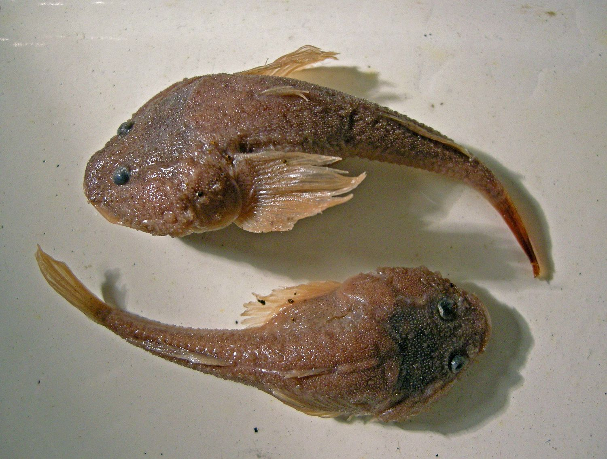Коли ми думаємо про клонування, ми автоматично думаємо про овечку Доллі, яка стала знаменитою в 1997 році. Тим не менш, варто відзначити, що клонування з'явилося ще задовго до її народження. Насправді, першою успішно клонованою твариною був пуголовок, і клонували його ще в 1952 році.
Доллі навіть не перший клонований ссавець. У 1995 році, за рік до народження Доллі, у тому ж інституті були клоновані п'ять овець ідві з них, Меган і Мораг, навіть дожили до дорослого стану. Різниця між ними і Доллі полягала в тому, що вони були створені звикористанням культивованих клітин, отриманих з дев'ятиденного ембріона, в той час як Доллі була вирощена з клітин дорослоїтварини. Саме їх народження ознаменувало технічний прорив, який уможливив появу Доллі всього кілька місяців по тому, але на відмінувід клонованих тварин, які були клоновані після них, Меган і Мораг на жаль, не потрапили в заголовки преси, коли вони народилися. -
У світі існують сотні отруйних змій.
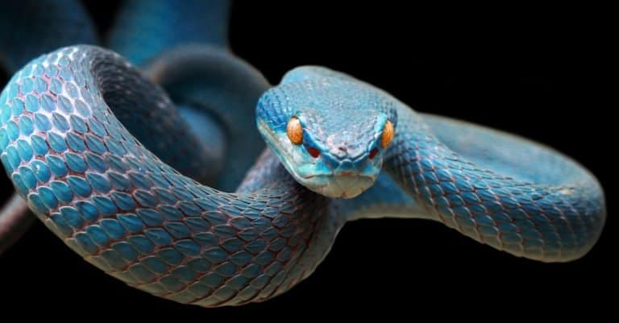Звичайна помилка, яку допускають люди, говорячи про отруйних змій, полягає в тому, що вони не розуміють відмінності між «токсичними» зміями та «отруйними». Отрута це токсин, який вводиться в тварину або людину за допомогою укусу або жала, в той час як токсин сам по собі або потрапляє в травний тракт, або вдихається. Тому токсичні та отруйні змії це зовсім не одне і те ж.
У той час як у світі існує близько 600 отруйних змій, науці відомо лише про двох токсичних змій, причому обидві токсичні, тількиякщо ви надумаєте їх вживати в їжу. Однією з цих змій є тигровий вуж. Він отримує свою отруту, вживаючи в їжу токсичних жаб ізапасаючи отруту в залозах на шиї. Це означає, що якщо який-небудь звір вирішить вкусити змію за шию (хижаки найчастіше кусаютьзмій саме за шию), він отримає повний рот отрути. Іншим видом є підвид підв'язувальних змій зі штату Орегон, який харчуєтьсяотруйними Жовтобрюховими тритонами, і також використовують їх отруту собі на користь. -
Всі жаби квакають.

У поширенні цього міфу винен Голлівуд. У кожного виду жаб є свій особливий і унікальний набір звуків, це означає, що квакає тільки один з них. Цим видом є королівська квакша (pacific tree frog), яка мешкає переважно вздовж західного узбережжя Північної Америки, ... включаючи Голлівуд. Їх квакання було записано і роками використано в сотнях фільмів, приблизно для того, щоб посилити враження дикої природи, віддаленої від цивілізації. На жаль, в більшості з цих місць, що варіюють від джунглів В'єтнаму до Еверглейдс у Флориді (Florida Everglades), квакання жаб просто немає. Проте, інші види жаб, видають ціле розмаїття цікавих звуків, таких як лаяння, хрип, квокання, свист та гарчання.
-
Щипавки заповзають вам у вухо і зариваються в мозок.
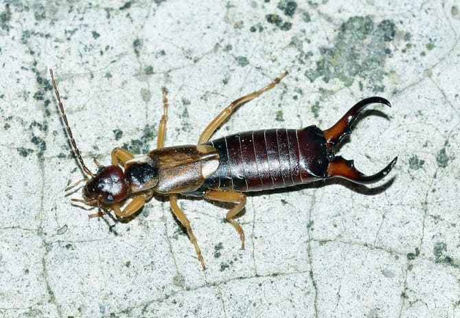Можете спати спокійно, це вигадка. Щипавки НЕ залазять у вуха людей частіше, ніж інші комахи (для тих, хто раптом занепокоївся, відзначимо, що це відбувається вкрай рідко), і вони вже точно ніколи не зариваються в мозок. Якщо вони цього не роблять, як же вони тоді отримали таку назву? Одна теорія полягає в тому, що клешні, розташовані в задній частині комахи, також відомі як хвостові придатки, схожі на інструменти, які використовуються для проколювання вух. Інша теорія полягає в тому, що кінці їх крил за формою нагадують вухо, проте ці теорії ніхто не може довести або спростувати.
Проте, незалежно від походження їх назви, багато людей протягом століть вірили в розповіді про те, що щипавки відчувають надзвичайний потяг до людського вуха. Однією людиною, яка твердо вірила, що це було правдою, був грецький філософ Пліній Старший, який вирішив, що кращим способом видалення щипавки з вуха було плювання в протилежне вухо, поки щипавці не доведеться піти. -
Де б ви не перебували, ви не більше ніж за два метри від щура.
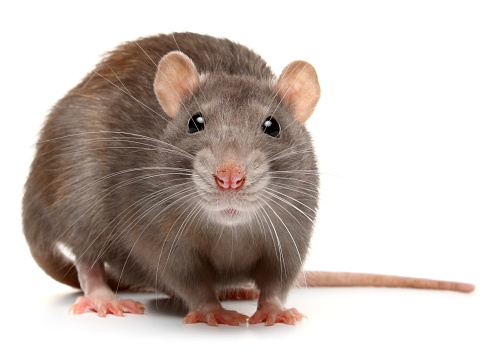Є дві основні причини не любити щурів. Одна з них полягає в тому, що вони є екологічними шкідниками, прирікають беззахисні та ендемічні види тварин на вимирання, особливо нелітаючих птахів. Однак, ця причина, найімовірніше, не заважає вам спокійно спати. Друга причина, яка якраз може викликати набагато більше занепокоєння - полягає в тому, що пацюки брудні, переносять хвороби тварин, живуть прямо під нашими ногами.
Проте, насправді їх там немає. За даними Загальнонаціонального Дослідження Гризунів (National Rodent Survey), ми зазвичай перебуваємо, принаймні, за 21 метр від найближчого щура, а можливо навіть за 50 метрів. Щури напрочуд чисті тварини, і хоча, ясна річ, диких щурів не рекомендується класти в рот, вони переносять не більше захворювань, ніж будь-які інші дикі тварини.
Крім того, сірі пацюки ніколи не були переносниками бубонної чуми. У цьому був винен їхній родич, чорний щур, який вже дорого заплатив за свою (потрібно відзначити, неусвідомлену) роль в поширенні цього захворювання. На сьогодні на Британських островах цей щур трапляється дуже рідко, лише кілька популяцій розкидано на віддалених островах і у великих містах. -
Буйволи були доведені мало не до повного зникнення через полювання на них в Північній Америці
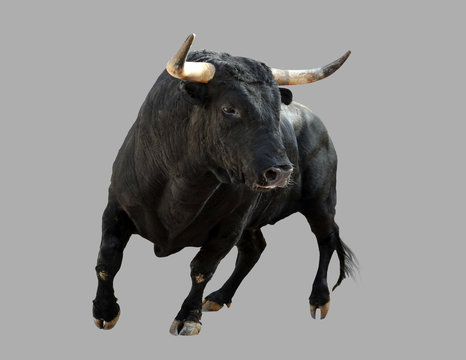Буйволи не могли бути доведені майже до повного зникнення у Північній Америці, тому що вони ніколи не мешкали в Північній Америці. Тварина, яка тут мається на увазі, є не буйволом, а американським бізоном. Щоб побачити справжнього буйвола, вам доведеться поїхати в Африку чи Азію.
Тож звідки ж утворилася плутанина? Слово буйвол (buffalo) португальського походження (від латинського «bubalus» або «дикий бик») і застосовувалося до азійського буйвола, який був привезений в Середземномор'я більше тисячі років тому. Пізніше ця назва була помилково застосована до бізонів, коли європейці вперше потрапили до Північної Америки. Слово «бізон» (bison), яке увійшло в оборот набагато пізніше, в 1774 році, також означало «дикий бик» на латині. А якщо ви ще сумніваєтеся, то наукова назва цієї тварини «Bison bison», повинна розсіяти всі ваші сумніви. -
Гази, що виділяються коровами, призводять до викидів величезної кількості метану.
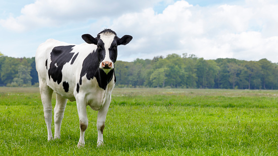Якщо і є тварина, яка може зрівнятися з машиною з вироблення жахливих забруднень, то це корова. Однак метан виходить НЕ через задній прохід істот, які страждають здуттям, насправді 95 відсотків метану походить від відрижки. Саме так, ми багато років звинувачували не той кінець.
Метан, що виділяється коровами, таким чином, становить третину викидів парникового газу Великобританії, і 4 відсотки світових викидів. Насправді, скотарство складає приголомшливих 18 відсотків від світових викидів парникового газу, що набагато більше, ніж всі автомобілі та інші види транспорту на планеті разом узяті. На даний момент ведуться роботи з виробництва таблетки, яка скоротить кількість метану в відрижці корів. Таблетка буде розчинятися усередині тварини протягом декількох місяців. -
Після ядерної війни в живих, в основному, залишилися б лише таргани.
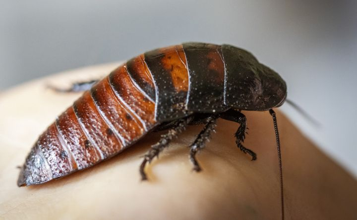Таргани це, безумовно, дуже витривалі тварини, в цьому не може бути ніяких сумнівів. Вони можуть залишатися живими під водою протягом цілого дня і жити без голови майже тиждень, але насправді, вони будуть першими комахами, які загинуть від радіоактивних опадів. Люди вмирають, отримавши радіацію в кількості 1 000 радів. Таргани, які вмирають лише коли отримують дозу у 20 000 радів, здаються нам неймовірно витривалими, проте їх здатність витримувати радіацію не йде ні в яке порівняння зі здібностями інших комах, особливо деяких видів паразитичних ос (Habrobracon hebetor), які можуть витримати радіацію в 180 000 радів.
-
Бронтозавр (Апатозавр) був величезним, довгошиїм динозавром.
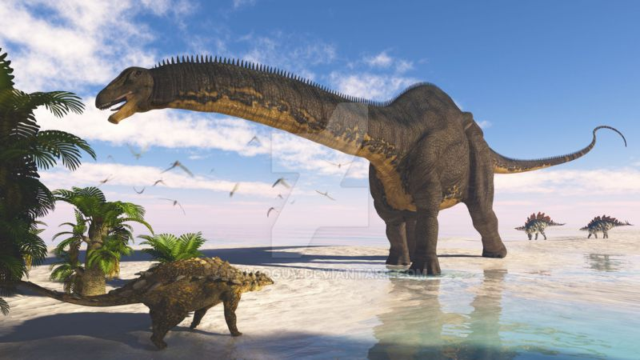Як правило, динозаври мають довгі, складні, важкі для вимови назви. Будучи дітьми, ми дізналися деякі з них - Тиранозавр, Стегозавр, Бронтозавр і так далі, і ці назви нам запам'яталися на все життя. Існують великі та широко відомі динозаври, знамениті вимерлі істоти, яких ми найчастіше бачимо у фільмах та інших інформаційних джерелах.
У нас для вас погані новини. Бронтозаври не те, що вимерли, їх спочатку не існувало. Все почалося під час періоду «воєн динозаврів» кінця дев'ятнадцятого століття, де мисливці за скам'янілими рештками змагалися по всій Північній Америці, щоб бути першими, хто виявить і назве новий вид динозаврів. Це були шалені перегони, і зовсім не дивно, що кілька речей, вислизнули з уваги науки. У 1877 році Гофониїл Чарльз Марш (Othniel Charles Marsh) виявив великого довгошийого динозавра зауропода, якого він назвав Апатозавр. У скелета була відсутня голова, але він не звернув на це увагу і просто приклав голову аналогічного динозавра, щоб доповнити його.
Через два роки Марш виявив скелет того, що він подумав, був іншим довгошиїм динозавром, причому на цей раз скелет був більш повним. Він назвав цього динозавра Бронтозавр (громова ящірка). Швидше за все, у своєму бажанні назвати цього динозавра, поки хтось інший не встиг цього зробити, Марш не зрозумів, що апатозавр і бронтозавр, насправді були однією твариною.
Вже в 1903 році вчені виявили цю помилку. Виходячи з того, що спочатку було дано назву апатозавр, вона стала офіційною назвою тварини. Назва бронтозавр тепер науково застаріла, тим не менш, саме ця назва краще відома публіці. Швидше за все, найкраще відома саме ця назва, тому що саме так був названий перший зібраний скелет цього динозавра зауропода. А може і тому що ця назва звучить краще.
Чому ворони найрозумніші серед тварин?
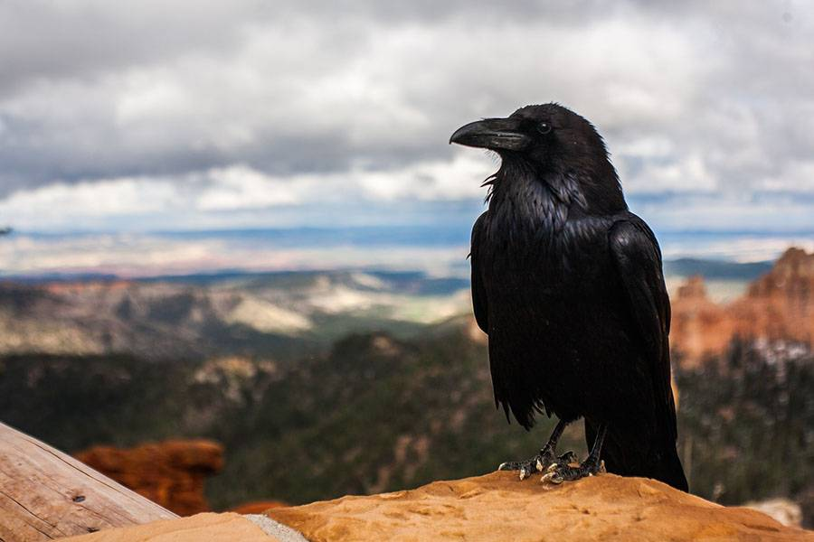Всупереч розхожій думці, що найрозумнішими тваринами є ссавці, багато вчених стверджують, що їм не поступається сімейство воронових, в яке входять ворони, граки і сойки. Останні експерименти з птахами показали, що вони володіють високорозвиненими когнітивними здібностями.
Вчені звикли вважати, що примати є найрозвиненішими організмами, оскільки володіють практично всіма можливими інтелектуальними здібностями: впізнавати себе в дзеркалі, вирішувати складні завдання, вміти виготовляти знаряддя, використовувати аналогії та символи, а також розуміти, що думають інші. Однак у міру того, як в ході наукових експериментів все більше і більше тварин виявляють схожі здібності, встановлені ієрархії поступово руйнуються: птахи тіснять приматів, собак і дельфінів.
По-перше, як повідомляють вчені Айовського університету, ворони можуть проводити аналогії та розуміти чи є предмети ідентичними або ж різними, в чому вони змогли переконатися на основі тестів, де птахам пропонувалося виявити відношення між двома зображеними предметами.
По-друге: Новокаледонські ворони можуть не просто використовувати знаряддя, але навіть вміють виготовляти їх і, як встановили біологи, навіть бережуть їх.
Не менш важливе відкриття пов'язане з тим, що представники сімейства воронових, знаючи, що за ними спостерігає хтось інший, не просто ховають свою здобич у затишному місці, але повертаються на те ж місце, щоб її переховати. Це може пояснюватися не просто асоціацією між двома діями (укриттям видобутку та її пропажею), але й тим, що вони можуть уявити себе на місці іншого мислездатного організму, що доводить, що ворони володіють так званою «теорією свідомості».